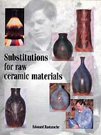
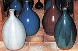
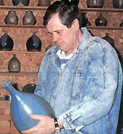

| Substitutions
for Raw Ceramic Materials
by Edouard Bastarache
With
the advent and popularization of glaze calculation programs, you
might think that a book on substitution of raw materials has become
redundant, however this is far from being the case.
Québecan Edouard
Bastarache's book is directed at potters not familiar with
glaze chemistry and those unfamiliar with glaze software - still
a substantial proportion of the potting community, as for some,
learning a glaze program would be a daunting task. Bastarache's
book fills this important gap, giving clear and easy directions
on substituting raw ceramic materials. The research, which forms
the basis of this book, should even be of use to potters familiar
with glaze calculation programs.
The book is divided into the following chapters with substitutions
for:
- Spodumene
- Petalite
- Lepidolite
- Potash Feldspar
- Soda Feldspar
- Kona F-4 spar
- G200
|
- Volcanic Ash
- Dolomite
- Wollastonite
- Pryophyllite
- Talc
- Cornish Stone
- Plastic Vitrox
|
As it turns out, this book is not only a source of materials substitutions,
but also of stoneware glaze recipes. Using a limited number of recipes,
the author substitutes the above ingredients (where appropriate),
chapter by chapter, offering new formulas for consideration. Glazes
used in the research include
- Clear Satin Matt
- Clear Gloss (various)
- White Gloss
- Leach White
- Milky White
- Off-White
- Blue Matt
- Blue Gloss
- Copper Red
- Lindo Black
- Kaki
- Caramel
|
- Base Yellow
- Russet
- Tan Gloss
- Tan Matt
- Green Matt
- Green Gloss
- B.G. Vert (Green)
- Oribe Green
- Turquoise
- Seacrest
- Celadon
- Tenmoku
|
Multiplying the above recipes with the substitutions suggested,
we arrive at hundreds of variations suitable for further experimentation
and testing with local materials. However, this publication is not
a glaze book. It's purpose rather, is to be a guide in substituting
raw materials. There may be various reasons for wanting to do this
- a material may not give the result you want (e.g. Lepidolite may
cause blistering), or a material may not be available in your country
or region.
While
Bastarache has used mainly stoneware glazes in the cone 8-10 range
(a few mid-fire glazes are also included), the suggested substitutions
should also work for glazes in other temperature ranges, or for
clay recipes for that matter.
Let's look at an example, substitution for Kona F-4 Feldspar in
this Tenmoku glaze (cone 8-10 reduction):
| Original Recipe
- Whiting..........10
- Kaolin..............5
- Flint.............. 25
- Red Iron Ox....10
- Kona F-4........60
|
Substitution
- Whiting.....................10
- Kaolin.........................5
- Flint..........................25
- Red Iron Ox...............10
- Custer Feldspar.........57.78
- Whiting.......................2.28
- Alumina......................2.04
|
The substitution arrived at is 93.3% Custer Feldspar + 3.8% Whiting
+ 3.34% Alumina for 100% Kona F-4.
Edouard
Bastarache lives in Québec, Canada, and has a colorful
history. He studied surgery, internal medicine and neuroendecrine
physiology and was a medical researcher and consultant in Occupational
& Environmental Medicine between 1971 and 1983. Since 1983 he
has been a full-time consultant in occupational and environmental
medicine. At the same time as his medical studies, he studied ceramics
under Julien Cloutier at La Boutique d'Argile (The Clay Shop) and
later also taught at the same school. Bastarache now lives in the
Sorel-Tracy region of Québec, near the St. Lawrence river.
He uses waste materials from steel plants located in the area to
color many of his glazes and clays. He fires most of his work to
cone 9 1/2 in reduction in a 60 cubic foot downdraft gas kiln.
Substitutions
for Raw Ceramic Materials is available in 7 languages:
French, English, German, Italian, Spanish, Portuguese (Portugal
& Brazil), and Esperanto from the following distributors:
- Imagine Céramique (France)
- Richoux S.A. (Paris, France)
- Bracker's Good Earth Clays Inc (USA)
- Great Lakes Clay & Supply (USA)
- Laguna Clay (USA)
- Minnesota Clay (USA)
- Potters Shop (USA)
- Hanusch & Ecker (Germany)
- Diaz de Santos (Spain)
- J.L.Vincentiz S.L. (Spain)
- Revista CERÁMICA (Spain)
- PSH-BRASIL, Sao Paulo (Brasil)
- Amazon online booksellers
More Book Reviews
More Articles
|